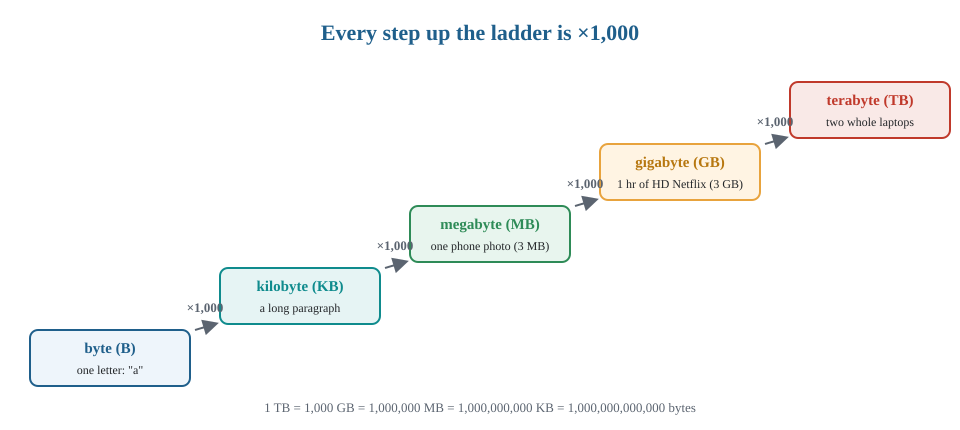
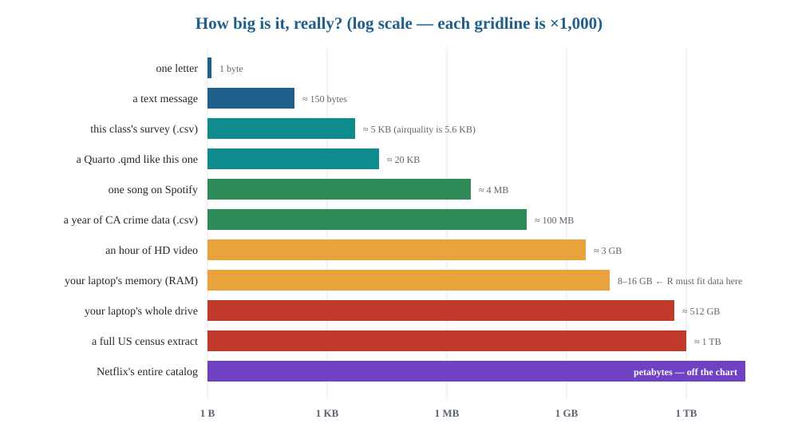

library(tibble) # for glimpse(). The pipe |> is built into R — nothing to load.Foundations 03 — Inspecting and Accessing Data
STAT/DATA 1810 · Week 2 Wednesday · SOLUTION
👀 Variables check. Still empty after
library(). Andairquality, which we use all class, will never appear there — it ships inside a package. Variables shows only what this session created.
Name: Instructor key · Date: __________
Before anything else, type your name and today’s date on the line above (and put your name in the
author:line at the very top of this file).
How to read this document. Two labels show up over and over:
- LM = Learning Moment. I demonstrate; you follow along and run the code.
- YT = Your Turn. You do it yourself — fill the blank or the empty chunk.
- 👀 Variables check. Glance at the Variables pane (right side, under SESSION) and answer the question. It is your session’s memory made visible.
WarningTiming & labels
- Budget: job 2′ · inspecting 20′ · accessing 18′ · the pipe 15′ · when things break 5′ · storage 11′ · ETV preview 5′ · exit 4′ = 80′
- Checkpoint: §3 (the pipe) starts by 40′ — if behind, cut YT3(c) and YT5
- LM Learning Moment — instructor demonstrates, students follow
- YT Your Turn — students do it themselves
- 👀 Variables check — the Fnd 01 / Lab 01 habit; keep it alive: every 👀 is a 20-second look at the pane, not a discussion
- Say the LM/YT names out loud the first time each appears — students otherwise guess
$/[ ]are deliberately lighter than before: enough to read code and grab a column, not a drill. The pipe and “how big is data” got the time instead- The ETV preview closes foundations: run a Cycle-0-style coffee import → plot live, narrating nothing but the three stage names — Monday they drive C1
0 · Today’s job 2 min
You get handed a dataset. Before any analysis, you must answer three questions: What is this? How big is it? What’s inside? Today is those three questions, as functions — then how to reach in and take a piece — and then the one symbol that will carry every line of code you write for the rest of the quarter.
1 · Inspecting data 20 min
We’ll interrogate airquality — 1973 New York air measurements, built in.
LM1 — the first look (5 min). Run each; note what question each answers:
# LM1: five inspection functions
head(airquality)tail(airquality)dim(airquality)[1] 153 6nrow(airquality)[1] 153ncol(airquality)[1] 6Q1. Rows: 153 · Columns: 6 · What is one OBSERVATION here (what does one row represent)?
Your answer: One row is one day of air measurements in New York (May–September 1973): that day’s Ozone, Solar.R, Wind, Temp, Month, Day.
TipQ1 answer
- Q1 153 rows × 6 columns
- One row = one day of measurements (May–Sep 1973)
- The observation question matters more than the numbers — every dataset this term starts with “what is a row?”
LM2 — names and structure (4 min).
# LM2
names(airquality)[1] "Ozone" "Solar.R" "Wind" "Temp" "Month" "Day" str(airquality)'data.frame': 153 obs. of 6 variables:
$ Ozone : int 41 36 12 18 NA 28 23 19 8 NA ...
$ Solar.R: int 190 118 149 313 NA NA 299 99 19 194 ...
$ Wind : num 7.4 8 12.6 11.5 14.3 14.9 8.6 13.8 20.1 8.6 ...
$ Temp : int 67 72 74 62 56 66 65 59 61 69 ...
$ Month : int 5 5 5 5 5 5 5 5 5 5 ...
$ Day : int 1 2 3 4 5 6 7 8 9 10 ...glimpse(airquality)Rows: 153
Columns: 6
$ Ozone <int> 41, 36, 12, 18, NA, 28, 23, 19, 8, NA, 7, 16, 11, 14, 18, 14, …
$ Solar.R <int> 190, 118, 149, 313, NA, NA, 299, 99, 19, 194, NA, 256, 290, 27…
$ Wind <dbl> 7.4, 8.0, 12.6, 11.5, 14.3, 14.9, 8.6, 13.8, 20.1, 8.6, 6.9, 9…
$ Temp <int> 67, 72, 74, 62, 56, 66, 65, 59, 61, 69, 74, 69, 66, 68, 58, 64…
$ Month <int> 5, 5, 5, 5, 5, 5, 5, 5, 5, 5, 5, 5, 5, 5, 5, 5, 5, 5, 5, 5, 5,…
$ Day <int> 1, 2, 3, 4, 5, 6, 7, 8, 9, 10, 11, 12, 13, 14, 15, 16, 17, 18,…Q2.
str()andglimpse()answer the same question. Which is easier to read, and what do the<int>/inttags tell you?Your answer:
glimpse()— one line per variable, and it fits any window width. Theint/<int>tags are the data types from Monday: every column here is stored as integers (adblwould mean doubles/decimals) — all quantitative, even though Month is really a category.
TipQ2 model answer
- Q2
glimpse()is easier — one line per variable, fits any width - The tags are the types from Monday:
intintegers,dbldoubles,chrcharacter,fctfactor - Point made: Monday’s vocabulary is now reading equipment. Ask which family each column is — Month is stored quantitative but means categorical (Monday’s item E)
LM3 — the numeric overview (3 min).
# LM3
summary(airquality) Ozone Solar.R Wind Temp
Min. : 1.00 Min. : 7.0 Min. : 1.700 Min. :56.00
1st Qu.: 18.00 1st Qu.:115.8 1st Qu.: 7.400 1st Qu.:72.00
Median : 31.50 Median :205.0 Median : 9.700 Median :79.00
Mean : 42.13 Mean :185.9 Mean : 9.958 Mean :77.88
3rd Qu.: 63.25 3rd Qu.:258.8 3rd Qu.:11.500 3rd Qu.:85.00
Max. :168.00 Max. :334.0 Max. :20.700 Max. :97.00
NA's :37 NA's :7
Month Day
Min. :5.000 Min. : 1.0
1st Qu.:6.000 1st Qu.: 8.0
Median :7.000 Median :16.0
Mean :6.993 Mean :15.8
3rd Qu.:8.000 3rd Qu.:23.0
Max. :9.000 Max. :31.0
Q3. Which TWO variables contain missing values, and how many each? (summary() tells you directly.)
Your answer: Ozone (37 NA) and Solar.R (7 NA) —
summary()prints anNA'sline under each column that has them.
TipQ3 answer
- Q3 Ozone (37 NA) and Solar.R (7 NA)
summary()prints the NA counts in-column — students should find them without help
(View(airquality) opens a spreadsheet view — try it in the Console; it doesn’t belong in a rendered document.)
YT1 (8 min). ➕ Insert a chunk and inspect a dataset you have NOT seen:
mtcars. Use whichever of the functions above you need to answer: (a) how many rows and columns? (b) what is one observation (one row)? Hint: runhead()and look at the row labels on the left. (c) which columns are NOT numeric — or are they all numeric? (d) any missing values? How do you know? (e) what is the medianmpg?
# YT1 — mtcars, unseen
dim(mtcars)[1] 32 11head(mtcars)glimpse(mtcars)Rows: 32
Columns: 11
$ mpg <dbl> 21.0, 21.0, 22.8, 21.4, 18.7, 18.1, 14.3, 24.4, 22.8, 19.2, 17.8,…
$ cyl <dbl> 6, 6, 4, 6, 8, 6, 8, 4, 4, 6, 6, 8, 8, 8, 8, 8, 8, 4, 4, 4, 4, 8,…
$ disp <dbl> 160.0, 160.0, 108.0, 258.0, 360.0, 225.0, 360.0, 146.7, 140.8, 16…
$ hp <dbl> 110, 110, 93, 110, 175, 105, 245, 62, 95, 123, 123, 180, 180, 180…
$ drat <dbl> 3.90, 3.90, 3.85, 3.08, 3.15, 2.76, 3.21, 3.69, 3.92, 3.92, 3.92,…
$ wt <dbl> 2.620, 2.875, 2.320, 3.215, 3.440, 3.460, 3.570, 3.190, 3.150, 3.…
$ qsec <dbl> 16.46, 17.02, 18.61, 19.44, 17.02, 20.22, 15.84, 20.00, 22.90, 18…
$ vs <dbl> 0, 0, 1, 1, 0, 1, 0, 1, 1, 1, 1, 0, 0, 0, 0, 0, 0, 1, 1, 1, 1, 0,…
$ am <dbl> 1, 1, 1, 0, 0, 0, 0, 0, 0, 0, 0, 0, 0, 0, 0, 0, 0, 1, 1, 1, 0, 0,…
$ gear <dbl> 4, 4, 4, 3, 3, 3, 3, 4, 4, 4, 4, 3, 3, 3, 3, 3, 3, 4, 4, 4, 3, 3,…
$ carb <dbl> 4, 4, 1, 1, 2, 1, 4, 2, 2, 4, 4, 3, 3, 3, 4, 4, 4, 1, 2, 1, 1, 2,…summary(mtcars) mpg cyl disp hp
Min. :10.40 Min. :4.000 Min. : 71.1 Min. : 52.0
1st Qu.:15.43 1st Qu.:4.000 1st Qu.:120.8 1st Qu.: 96.5
Median :19.20 Median :6.000 Median :196.3 Median :123.0
Mean :20.09 Mean :6.188 Mean :230.7 Mean :146.7
3rd Qu.:22.80 3rd Qu.:8.000 3rd Qu.:326.0 3rd Qu.:180.0
Max. :33.90 Max. :8.000 Max. :472.0 Max. :335.0
drat wt qsec vs
Min. :2.760 Min. :1.513 Min. :14.50 Min. :0.0000
1st Qu.:3.080 1st Qu.:2.581 1st Qu.:16.89 1st Qu.:0.0000
Median :3.695 Median :3.325 Median :17.71 Median :0.0000
Mean :3.597 Mean :3.217 Mean :17.85 Mean :0.4375
3rd Qu.:3.920 3rd Qu.:3.610 3rd Qu.:18.90 3rd Qu.:1.0000
Max. :4.930 Max. :5.424 Max. :22.90 Max. :1.0000
am gear carb
Min. :0.0000 Min. :3.000 Min. :1.000
1st Qu.:0.0000 1st Qu.:3.000 1st Qu.:2.000
Median :0.0000 Median :4.000 Median :2.000
Mean :0.4062 Mean :3.688 Mean :2.812
3rd Qu.:1.0000 3rd Qu.:4.000 3rd Qu.:4.000
Max. :1.0000 Max. :5.000 Max. :8.000 (a) 32 rows × 11 columns · (b) one row = one car model (the row names are the cars) · (c) all numeric — every column is
dbl· (d) none —summary()shows noNA'sline for any column · (e) median mpg = 19.2
NoteExpected — YT1
- YT1 (a) 32 × 11
- (b) one row = one car model — the row names are the cars (first time they’ve seen row names carry meaning)
- (c) all numeric —
dbleverywhere, evencyl,am,gear, which are really categories (connect to Monday’s item E) - (d) none —
summary()shows no NA row - (e) median mpg = 19.2
- Teaching note: the point of YT1 is that they choose the functions themselves — don’t prescribe which
2 · Accessing data — just enough 18 min
Three tools, three jobs. You need to read all three; you’ll write mostly the first one:
| Tool | Job | Returns |
|---|---|---|
$ |
one column, by name | a vector |
[rows, cols] |
a rectangle, by position/name | usually a data frame |
[[ ]] |
one element, dug out | the thing itself |
LM4 — $, the workhorse (4 min).
# LM4: a column is a vector
airquality$Temp [1] 67 72 74 62 56 66 65 59 61 69 74 69 66 68 58 64 66 57 68 62 59 73 61 61 57
[26] 58 57 67 81 79 76 78 74 67 84 85 79 82 87 90 87 93 92 82 80 79 77 72 65 73
[51] 76 77 76 76 76 75 78 73 80 77 83 84 85 81 84 83 83 88 92 92 89 82 73 81 91
[76] 80 81 82 84 87 85 74 81 82 86 85 82 86 88 86 83 81 81 81 82 86 85 87 89 90
[101] 90 92 86 86 82 80 79 77 79 76 78 78 77 72 75 79 81 86 88 97 94 96 94 91 92
[126] 93 93 87 84 80 78 75 73 81 76 77 71 71 78 67 76 68 82 64 71 81 69 63 70 77
[151] 75 76 68mean(airquality$Temp)[1] 77.88235👀 Variables check. Nothing new — we looked at a column but never assigned it. Now run
july_temp <- airquality$Temp[airquality$Month == 7]in the Console: Variables shows it as a numeric vector of length 31.
NoteExpected
- 77.88°F
YT2 (5 min). ➕ Insert a chunk. Using
$, find: (a) the mean of Wind; (b) the max Temp; (c) the mean of Ozone — it comes backNA. Fix it with the argument you looked up in the help page last week; (d) how many days had Temp above 90? (Hint:sum(airquality$Temp > 90)— TRUE counts as 1.)
# YT2
mean(airquality$Wind)[1] 9.957516max(airquality$Temp)[1] 97mean(airquality$Ozone)[1] NAmean(airquality$Ozone, na.rm = TRUE)[1] 42.12931sum(airquality$Temp > 90)[1] 14(a) 9.96 mph · (b) 97 · (c)
NA, then 42.13 withna.rm = TRUE· (d) 14 days
NoteExpected — YT2
- YT2 (a) 9.96 mph
- (b) 97
- (c)
NA, then 42.13 withna.rm = TRUE— the callback to Foundations 01 Q5; let someone remember it before you say it - (d) 14 days — the first logical vector doing arithmetic (TRUE = 1); say it once, it returns with
filter()Monday
LM5 — [rows, columns] and [[ ]], in one pass (4 min). Predict each before running. Square brackets take a position or a name; double brackets dig out one thing:
# LM5: predict, then run
airquality[1, ] # first row, all columnsairquality[1:5, c("Ozone", "Temp")] # a rectangleairquality[[1, "Temp"]] # one cell, dug out[1] 67# the same three tools on a list (Monday's junk drawer):
my_list <- list(nums = c(1, 2, 3), word = "hello")
my_list$word[1] "hello"my_list[["nums"]][1] 1 2 3Q4.
airquality$Tempandairquality[["Temp"]]give the same vector.airquality["Temp"]does not — what is it instead? A one-column data frame (the printed column header gives it away).
TipQ4 answer — rule of thumb, and stop there
- Q4
airquality["Temp"]is still a data frame (one column);$and[[ ]]return the bare vector - Rule of thumb to leave them with, and no more than this today:
$→ a column you’ll compute on (90% of what you’ll write)[rows, cols]→ a rectangle (you’ll read it in other people’s code; Mondayfilter()/select()replace it)[[ ]]→ dig one thing out of a container (lists, week 8)
- Deeper indexing rules are drill material, not lecture material
YT3 (5 min). ➕ Insert a chunk. Switch to
iris. Write ONE line for each: (a) the Species column as a vector — how long is it? (b) rows 51–53, all columns — what species are they? (c) the last row of iris (usenrow()inside the brackets — no hard-coded 150).
# YT3
length(iris$Species) # (a) 150[1] 150iris[51:53, ] # (b) versicoloriris[nrow(iris), ] # (c) row 150 — virginica
TipYT3 notes
- YT3 (a) 150 · (b) versicolor · (c) row 150, virginica
- (c) is the one to check:
nrow()inside the bracket — ask “what if tomorrow the file has 200 rows?” — that’s why we don’t type 150
3 · The pipe |> — the symbol you’ll type more than any other 15 min
ImportantRead this one out loud
|> means “and then.” Take the thing on the left, hand it to the function on the right. That’s it. Everything from Monday on — every ETV cycle, every plot, every summary — is a chain of and thens.
LM6 — the same code, two ways (5 min). Question: on average, how warm were the July days? Without the pipe, you read this inside-out, from the deepest parentheses to the outermost:
# LM6a: nested — read from the INSIDE out
round(mean(airquality$Temp[airquality$Month == 7]), 1)[1] 83.9With the pipe, you read it top-to-bottom, like a recipe:
# LM6b: piped — read "and then", top to bottom
airquality$Temp[airquality$Month == 7] |>
mean() |>
round(1)[1] 83.9Same answer, 83.9°F. But the second one you can say: “take July’s temperatures, and then average them, and then round to one decimal.”
NoteHow the pipe works — the one rule
x |> f()is exactlyf(x). The left side becomes the first argument of the function on the rightx |> f(y)isf(x, y)— extra arguments go where they always did- So
airquality$Temp |> mean(na.rm = TRUE)ismean(airquality$Temp, na.rm = TRUE) - Keyboard: Cmd/Ctrl + Shift + M types
|>for you in Positron (if it types%>%, that’s the older tidyverse pipe — same idea; set the native pipe option in Positron’s settings) - Style: one step per line, indent the continuation. Your eye follows the recipe
LM7 — a real chain (4 min). Which days are missing Ozone? Read each line as “and then”:
# LM7: WHICH rows are missing Ozone? — read it as a sentence
airquality$Ozone |>
is.na() |>
which() |>
head()[1] 5 10 25 26 27 32
NoteExpected — LM7
- rows 5, 10, 25, 26, 27, 32
- Have a student read the chain aloud: “take Ozone, and then flag the NAs, and then find their positions, and then show the first six.” If they can say it, they can write it
- The nested version is
head(which(is.na(airquality$Ozone)))— put it on the projector next to the pipe. Nobody prefers the nested one
YT4 (6 min). ➕ Insert a chunk. Rewrite each nested line as a pipe, one step per line, and confirm the answer doesn’t change: (a)
sqrt(mean(airquality$Wind))(b)round(mean(airquality$Ozone, na.rm = TRUE), 2)(c)length(unique(iris$Species))Then write ONE pipe of your own: three steps, any data, and a comment reading it as a sentence.
# YT4
airquality$Wind |> mean() |> sqrt() # (a) 3.156[1] 3.155553airquality$Ozone |> mean(na.rm = TRUE) |> round(2) # (b) 42.13[1] 42.13iris$Species |> unique() |> length() # (c) 3[1] 3# my own: "take Temp, and then keep the values above 90, and then count them"
airquality$Temp[airquality$Temp > 90] |> length()[1] 14
TipYT4 notes
- YT4 (a) 3.156 · (b) 42.13 · (c) 3
- (b) is the check:
na.rm = TRUEstays insidemean()— the pipe only fills the first argument - The “own pipe” is the deliverable: walk the room, ask three students to read theirs aloud. Monday’s
coffee |> filter(...) |> ggplot(...)is the same grammar with better verbs
3b · When things break 5 min
Today’s errors are access errors — asking for something that isn’t where you pointed. Read, name the family, fix.
YT4b (5 min). Each chunk below has ONE bug. Read the error (or the silent
NULL!), fix it in place, and write the error family in the comment.
# YT4b-1 — error family: ____
mean(airquality$temp)# YT4b-1 — error family: column-name typo — `$` on a missing column returns NULL, mean() warns and gives NA (R is case-sensitive)
mean(airquality$Temp)[1] 77.88235# YT4b-2 — error family: ____
airquality[1:5, c("Ozone", "Temperature")]# YT4b-2 — error family: undefined columns selected — the name in [ ] must match exactly
airquality[1:5, c("Ozone", "Temp")]# YT4b-3 — error family: ____
airquality$Ozone |>
is.na() |>
which()
head()# YT4b-3 — error family: a broken pipe — the missing |> means head() runs on nothing (error: argument "x" is missing)
airquality$Ozone |>
is.na() |>
which() |>
head()[1] 5 10 25 26 27 32
CautionYT4b answers — three error families for accessing data
- YT4b-1
airquality$temp→NULL, thenmean()warns and returnsNA— no red error- family: column-name typo with
$(case-sensitive) — the sneakiest, same as Fnd 01 YT7a - fix:
Temp; habit:names(airquality)first
- family: column-name typo with
- YT4b-2
Error in [.data.frame: undefined columns selected- family: wrong name inside
[ ]— brackets do error where$stays silent - fix:
"Temp"
- family: wrong name inside
- YT4b-3
Error in head(): argument "x" is missing, with no default- family: broken pipe — a line without
|>at its end ends the chain; the next line runs alone - fix: add the
|>; rule: every line of a chain except the last ends in|>
- family: broken pipe — a line without
- Land the contrast:
$fails quietly,[ ]fails loudly, a pipe fails one line late. Reading the message tells you which
4 · How big is data? 11 min
LM8 — the ladder (4 min). Data size is measured in bytes — one byte is roughly one letter. Every step up the ladder multiplies by a thousand:

LM9 — where real things land (4 min). The bars below are on a log scale — each gridline is another ×1,000. Notice where your laptop’s memory sits, because that’s the ceiling for what R can hold:

| Unit | ≈ bytes | Something you own that’s about that size |
|---|---|---|
| byte | 1 | one letter of a text message |
| kilobyte (KB) | 1 thousand | a long email; this class’s survey as a .csv; airquality (5.6 KB) |
| megabyte (MB) | 1 million | one phone photo (3 MB); one song (4 MB); a year of CA crime data (~100 MB) |
| gigabyte (GB) | 1 billion | an hour of HD Netflix (3 GB); your laptop’s memory (8–16 GB) |
| terabyte (TB) | 1 trillion | two of your laptop’s drives; a full US census extract |
| petabyte (PB) | 1 quadrillion | Netflix’s entire catalog; the data behind a weather forecast |
Now measure our objects:
# LM9: how big are OUR objects?
object.size(airquality)5632 bytesobject.size(iris)7256 bytesobject.size(mtcars)7208 bytesQ5. Order the three from smallest to largest, and name the unit they’re in: airquality (≈ 5.6 KB) < mtcars (≈ 7.2 KB) < iris (≈ 7.3 KB) — all kilobytes, i.e. a few paragraphs each.
Why it matters (3 min): R holds data in memory — the orange bar, not the red one. A 2 GB file on an 8 GB laptop imports (barely); a 200 GB file does not — you’d need different tools (a database, or a bigger machine). File size is the first thing to check before importing, which is exactly where next week begins.
Q6. Your laptop has 8 GB of memory. Roughly how many copies of a 500 MB dataset could fit at once (ignore overhead)? About 16 — 8 GB ≈ 8,000 MB, and 8,000 / 500 = 16. How many hours of HD video is that? Not even three.
TipQ5 & Q6 answers
- Q5 actually run it: airquality ≈ 5.6 KB, mtcars ≈ 7.2 KB, iris ≈ 7.3 KB → airquality < mtcars < iris, all in KB
- mtcars is small in rows but its row names cost bytes — a fun 20-second aside if asked; otherwise just confirm the order
- Q6 about 16 copies — 8 GB ≈ 8,000 MB; 8,000 / 500 = 16; that whole 8 GB is under three hours of HD video
- honest version: overhead means fewer in practice; R also copies objects when you modify them
- the point is order-of-magnitude reasoning, which is sub-outcome 1.12’s whole job
- Land the contrast: their phone camera roll (tens of GB) is bigger than any dataset they’ll open in this course — data science files are not the big files in their life
YT5 (2 min). ➕ Insert a chunk. Run
object.size(iris)and thenobject.size(iris$Sepal.Length). Roughly what fraction of the whole is one column? Does that match “1 of 5 columns”? One sentence on why or why not.
# YT5
object.size(iris)7256 bytesobject.size(iris$Sepal.Length)1248 bytesOne column is ≈ 1.2 KB of ≈ 7.3 KB — about 17%, which is less than 1/5. It doesn’t match because the data frame itself costs something: column names, row labels, and the Species factor’s level table are stored on top of the raw numbers.
TipYT5 answer
- YT5 one column ≈ 1.2 KB of ≈ 7.3 KB — about 17%, less than 1/5
- Why: the data frame carries overhead (names, row labels, the factor’s level table) beyond its raw numbers
- Full credit: any answer noticing “less than 1/5, because the container itself costs something”
5 · Where this is going 5 min — watch
Instructor runs one complete ETV cycle live, start to finish, no pauses: import a CSV → transform → plot. Every function you just learned appears in the first thirty seconds — and every line is joined by |>. Monday, you drive.
ImportantTeaching note — the ETV preview
- Run the coffee import →
filter→ histogram in under three minutes - Say only: “Extraction. Transformation. Visualization. Monday, this is yours.” — and point at each
|>as you go: “and then” - No function explanations — the mystique is the motivation
6 · Exit question 4 min
You’re handed
mysterydata, a data frame you’ve never seen. Write the three lines you’d run FIRST, in order, and say what each tells you. Then write ONE pipe that takes the columnscore, removes NAs from its mean, and rounds to one decimal.
# your three inspection lines:
glimpse(mysterydata) # structure: rows, columns, names, types
summary(mysterydata) # ranges + WHERE the NAs are
head(mysterydata) # what the values actually look like
# your one pipe:
mysterydata$score |>
mean(na.rm = TRUE) |>
round(1)Your explanation:
glimpse()first tells me the shape (rows, columns), the names, and the type of every column.summary()then gives the range of each numeric column and, crucially, where theNAs are.head()shows what the values actually look like so I can sanity-check the types. Then the pipe reads “take score, and then average it ignoring NAs, and then round to one decimal.”
TipModel answer
glimpse(mysterydata) # structure: rows, columns, names, types
summary(mysterydata) # ranges + WHERE the NAs are
head(mysterydata) # what the values actually look like
mysterydata$score |> mean(na.rm = TRUE) |> round(1)- Passes: any three of {
glimpse/str,summary,head/tail,dim/nrow+ncol,names} with correct one-line justifications - The pipe must start from
mysterydata$score(or[["score"]]) and keepna.rm = TRUEinsidemean();mysterydata["score"]is a data frame — half credit with the explanation - The habits being graded: inspect before you compute, and write it as a recipe
7 · Save & render 1 min
Save this file into your R/Notes/ folder as fnd03_yourlastname.qmd. Then Restart R — watch Variables empty out — and press Render. That is the last foundations document; from Monday every file you render is an ETV cycle, and every one of them starts with the three inspection lines from today’s exit question.